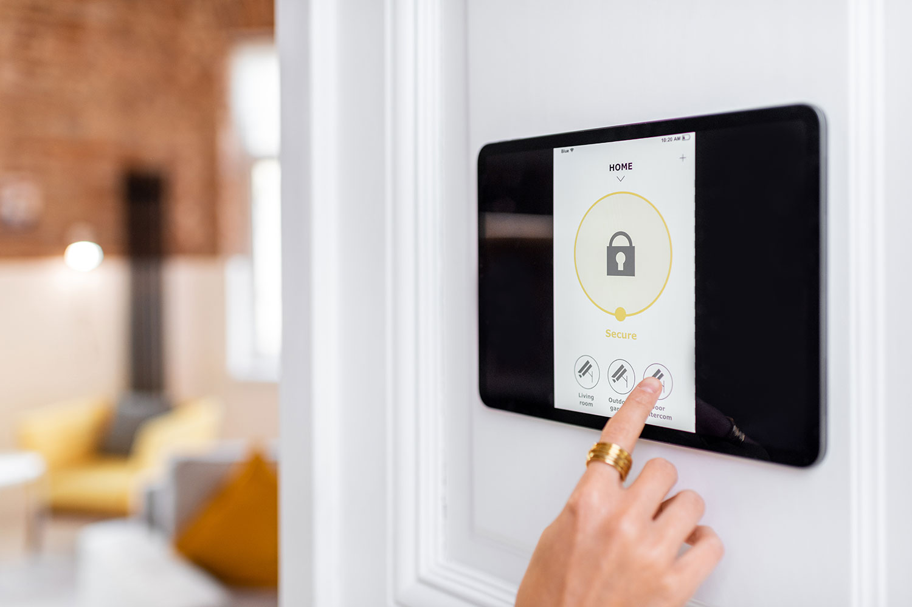
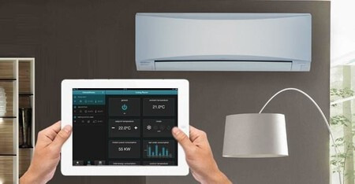
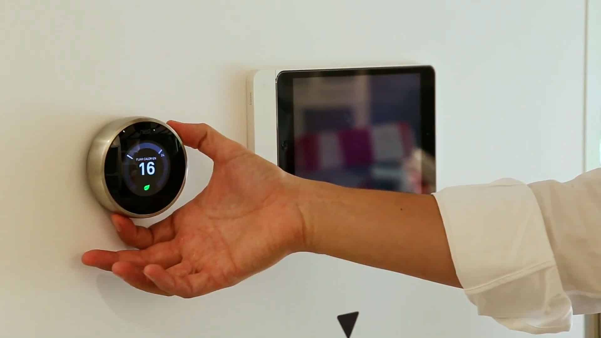

Iluminación
Bombillas
Nuestras bombillas inteligentes ofrecen millones de colores vivos, además de blanco ambiente frío y cálido, e incluye 56 modos de escena preestablecidos animados. Configura tus colores favoritos con un solo toque para alegrar tu hogar.

Seguridad
Alarmas
Sensor inteligente para puertas y ventanas que detecta apertura y cierre, enviando notificaciones al móvil a través de la aplicación de nuestro dispositivo.

Climatización
Regrigeración Inteligente
Sistema que aporta un funcionamiento más silencioso y además reduce las posibles vibraciones para crear un mayor confort. Posee mando a distancia para controlar el aire acondicionado cómodamente desde cualquier lugar sin tener que acercarse al mismo para cambiar su configuración.
Asistentes
Atención al cliente
Un soporte que una empresa brinda para resolver dudas, gestionar reclamaciones o solucionar problemas relacionados con sus productos o servicios

Ahorro de energia
Controla con tu movil
Desde el modo de detección nocturna, el modo de sensor diurno hasta el modo de luz constante, nuestras luces para armarios se adaptan a sus necesidades y preferencias

Mano de obra
Casa futurista
Pide para la construcción de tu casa inteligente, el futuro con tu cas ya equipada con la mayor tecnologia.